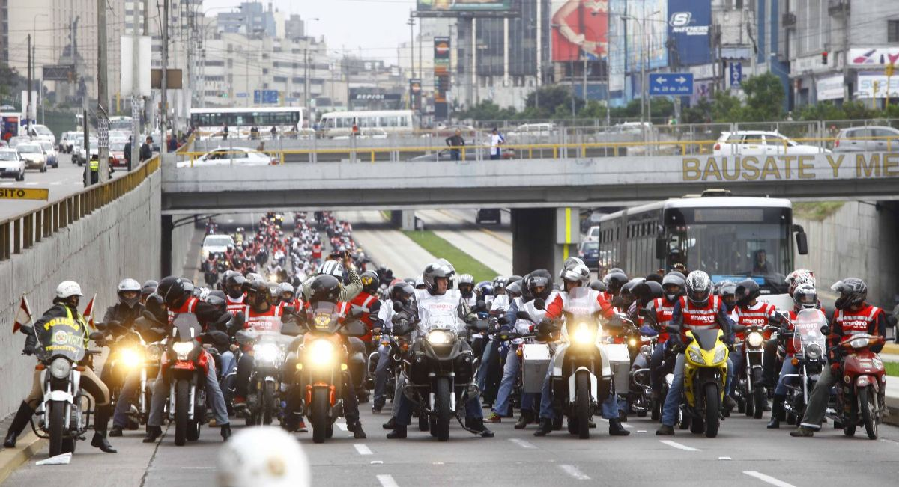
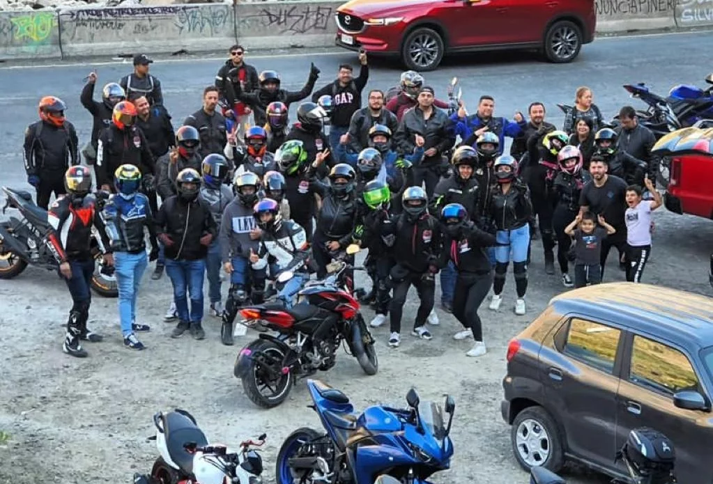

0
Moteros alcanzados por la comunidad
Comunidad biker del Peru
MOTOCORE nace para reunir en un solo lugar lo que un motero realmente necesita para avanzar: contexto del mercado local, comparacion practica entre alternativas y una comunidad con ganas de compartir experiencias reales.

0
Moteros alcanzados por la comunidad
0
Modelos referenciados en el mercado local
0
Guias y recursos para elegir mejor
0
Rutas comunitarias destacadas cada mes
Este sitio web esta hecho de moteros para moteros. Aqui puedes encontrar un entorno pensado para la comunidad biker en Peru, con informacion clara y ordenada para descubrir modelos disponibles, entender diferencias importantes y encontrar puntos de referencia que te ayuden a comparar mas rapido y con mayor precision.
Elige un enfoque y te mostramos contenido contextual para ayudarte a encontrar el camino que mas encaja contigo dentro del universo motero.
Encuentra perspectivas sobre opciones ideales para el dia a dia, trayectos cortos y un uso eficiente dentro del ritmo de la ciudad.
Priorizamos contenido orientado a experiencias reales de uso para que puedas decidir con una vision aterrizada y util.
Descubre ideas de rutas, recomendaciones de preparacion y puntos clave para disfrutar viajes mas seguros y mejor planificados.
Conecta con una vibra colaborativa donde compartir experiencias suma valor para quienes recien inician y para quienes ya ruedan hace tiempo.
Contenido enfocado en escenarios mixtos, trayectos variados y mentalidad aventurera para quienes buscan salir de la rutina.
Consejos de contexto para planear mejor cada salida, desde la logistica hasta la lectura del entorno antes de rodar.
MOTOCORE es un punto de encuentro digital para personas que viven la cultura motera y quieren informarse rapido sobre lo que se mueve en el mercado peruano.
La idea es facilitar la busqueda de modelos y centralizar contenido util para que cada motero pueda comparar, decidir y avanzar con mas confianza.
Este proyecto busca crecer junto a su comunidad: compartiendo experiencias, rutas, tendencias y todo lo que hace unica la pasion por las motos.


"Por fin un sitio donde puedo tener una mirada general del mercado sin perder tiempo buscando en veinte paginas distintas."
- Andrea, Lima"El enfoque comunitario se siente real. No es solo informacion, tambien inspira a salir a rodar con mejor criterio."
- Juan, ArequipaRespuestas rapidas para entender como te ayuda MOTOCORE en tu proceso de eleccion.
Organizando informacion de forma clara y contextual para que puedas identificar diferencias relevantes sin navegar entre fuentes desordenadas.
No. El enfoque esta pensado tanto para quien recien inicia como para quien ya tiene experiencia y busca una referencia mas rapida.
Si. La idea es crecer de forma continua con la comunidad, incorporando mas contexto, actualizaciones y espacios de participacion.